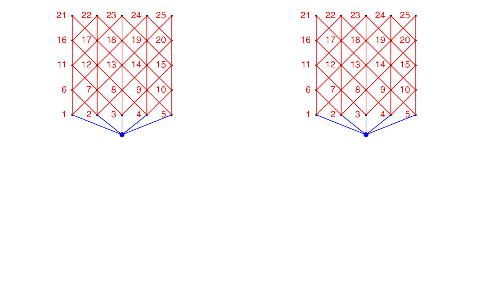

This function constructs eigenvectors of a site-by-link matrix. Weights can be applied to the links.
aem( aem.build.binary, binary.mat, weight, rm.link0 = FALSE, print.binary.mat = FALSE )
Arguments
| aem.build.binary | Object created by function |
|---|---|
| binary.mat | Site (n rows) by link (k columns) matrix. The 1s in the matrix represents the presence of a link influencing a site, directly or indirectly, otherwise the values are 0s. |
| weight | Vector of weights of length k, to be applied to the links. |
| rm.link0 | Logical ( |
| print.binary.mat | Logical ( |
Value
valueA vector of singular values associated with the AEM.
vectorsA matrix of eigenvector. Each column is an AEM eigenfunction (or variable).
mod.binary.matA site-by-link matrix modified through the function.
Details
If only an object of class aem.build.binary is given to this function, The
argument binary.mat is not considered. binary.mat is only
considered when the argument aem.build.binary is missing.
If weights are applied to the links, the length of vector weight has
to take into account wether the links connecting real sites to the origin
(the fictitious site 0) have been kept or removed.
Note
It sometimes happens that AEM eigenfunctions have equal singular values. In that case, different sets of AEM eigenfunctions may be produced on different plateforms.
Eigenvectors associated to an eigenvalue that is smaller than \(10^{-12}\) are considered negligeable. They have been removed from the created AEM eigenfunctions.
References
Blanchet F.G., P. Legendre and Borcard D. (2008) Modelling directional spatial processes in ecological data. Ecological Modelling, 215, 325-336.
See also
Author
F. Guillaume Blanchet
Examples
# Construction of object of class nb (spdep) if(require("spdep", quietly = TRUE)){ nb <- cell2nb(5,5,"queen") # Create fictitious geographical coordinates xy <- cbind(1:25,expand.grid(1:5,1:5)) # Build binary site-by-link matrix bin.mat <- aem.build.binary(nb,xy) # Construct AEM eigenfunctions from an object of class aem.build.binary res <- aem(aem.build.binary=bin.mat,rm.link0=FALSE) res$values # Illustrate 4 AEM eigenfunctions using bubble plots opal <- palette() palette(c("black","white")) par(mfrow=c(2,2)) symbols(x=xy[,2:3], circles=abs(res$vectors[,1]), inches=FALSE, asp=1, fg=ifelse(sign(-res$vectors[,1])+1>0,1,0), bg=ifelse(sign(res$vectors[,1])+1>0,1,0), xlab="x", ylab="y") title("AEM 1") symbols(x=xy[,2:3], circles=abs(res$vectors[,2]), inches=FALSE, asp=1, fg=ifelse(sign(-res$vectors[,2])+1>0,1,0), bg=ifelse(sign(res$vectors[,2])+1>0,1,0), xlab="x", ylab="y") title("AEM 2") symbols(x=xy[,2:3], circles=abs(res$vectors[,3]), inches=FALSE, asp=1, fg=ifelse(sign(-res$vectors[,3])+1>0,1,0), bg=ifelse(sign(res$vectors[,3])+1>0,1,0), xlab="x", ylab="y") title("AEM 3") symbols(x=xy[,2:3], circles=abs(res$vectors[,4]), inches=FALSE, asp=1, fg=ifelse(sign(-res$vectors[,4])+1>0,1,0), bg=ifelse(sign(res$vectors[,4])+1>0,1,0), xlab="x", ylab="y") title("AEM 4") # Construct AEM eigenfunctions using only a site-by-link matrix res2 <- aem(binary.mat=bin.mat[[1]]) res2$values # Illustrate 4 AEM eigenfunctions using bubble plots par(mfrow=c(2,2)) symbols(x=xy[,2:3], circles=abs(res2$vectors[,1]), inches=FALSE, asp=1, fg=ifelse(sign(-res2$vectors[,1])+1>0,1,0), bg=ifelse(sign(res2$vectors[,1])+1>0,1,0), xlab="x", ylab="y") title("AEM 1") symbols(x=xy[,2:3], circles=abs(res2$vectors[,2]), inches=FALSE, asp=1, fg=ifelse(sign(-res2$vectors[,2])+1>0,1,0), bg=ifelse(sign(res2$vectors[,2])+1>0,1,0), xlab="x", ylab="y") title("AEM 2") symbols(x=xy[,2:3], circles=abs(res2$vectors[,3]), inches=FALSE, asp=1, fg=ifelse(sign(-res2$vectors[,3])+1>0,1,0), bg=ifelse(sign(res2$vectors[,3])+1>0,1,0), xlab="x", ylab="y") title("AEM 3") symbols(x=xy[,2:3], circles=abs(res2$vectors[,4]), inches=FALSE,asp=1, fg=ifelse(sign(-res2$vectors[,4])+1>0,1,0), bg=ifelse(sign(res2$vectors[,4])+1>0,1,0), xlab="x", ylab="y") title("AEM 4") palette(opal) # Construct AEM eigenfunctions with a function of the distance # as weights to put on the links # Construction of object of class nb (spdep) nb<-cell2nb(5,5,"queen") # Create fictitious geographical coordinates xy <- cbind(1:25,expand.grid(1:5,1:5)) # Build binary site-by-link matrix bin.mat <- aem.build.binary(nb,xy) # Construct a matrix of distances long.lien.mat<-as.matrix(dist(xy)) # Extract the edges, remove the ones directly linked to site 0 lien.b<-bin.mat$edges[-1:-5,] # Construct a vector giving the length of each edge long.lien<-vector(length=nrow(lien.b)) for(i in 1:nrow(lien.b)){ long.lien[i]<-long.lien.mat[lien.b[i,1],lien.b[i,2]] } # Construct a vector of weights based on distance weight.vec<-1-(long.lien/max(long.lien))^2 # Construct AEM eigenfunctions from an object of class aem.build.binary res <- aem(aem.build.binary=bin.mat,weight=weight.vec,rm.link0=TRUE) res # Computing Moran's I for AEMs # Building AEMs xy <- cbind(1:25,expand.grid(1:5,1:5)) Wdist <- 1/as.matrix(dist(xy[,2:3])) nb <- cell2nb(5,5,"queen") bin.mat <- aem.build.binary(nb,xy) linkBase <- bin.mat[[2]] link <- linkBase[-which(linkBase[,1] == 0),] weight <- numeric() for(i in 1:nrow(link)){ weight[i] <- Wdist[link[i,1],link[i,2]] } AEM <- aem(bin.mat, weight = weight, rm.link0 = TRUE) # Constructing asymmetric matrix matasym <- matrix(0,ncol=25, nrow=25) for(i in 1:nrow(link)){ matasym[link[i,1],link[i,2]]<- weight[i] } # Build a listw object from the asymmetric matrix listwAsym <- mat2listw(matasym) # Calculate Moran's I for AEM MoranIAEM <- moran.randtest(AEM$vectors, listwAsym) }#> #> #>#>#> #>#> #> #>